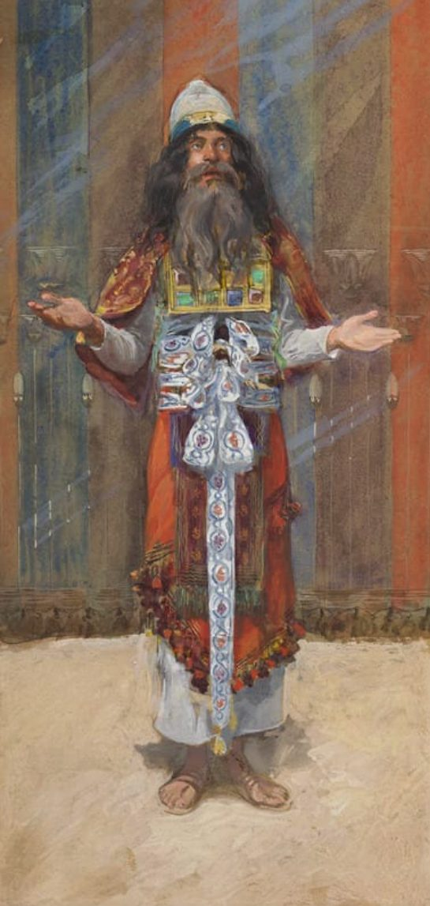

Hebrews 9 — The Mister Translation

⚠ Tissot painted the high priest in the vestments of Exodus 28, the breastplate set with stones: the one who goes into the inner room ‘alone, once a year, not without blood’ (verse 7).
(The_Jewish_Museum).jpg){kind=link}
Translator’s Notes
“Now the first one had regulations for sacred service and an earthly sanctuary. For a tent was prepared, the first one … this is called the Holy Place. And behind the second curtain was a tent called the Holy of Holies.” “The first one” is the first covenant of Hebrews 8:7. “Regulations” is dikaiōma, the “requirements” of Luke 1:6 (dictionary). Latreia, “sacred service,” stands in five verses, among them Israel’s “sacred service” at Romans 9:4 (dictionary). Kosmikos, “earthly,” stands in two verses, here and the “worldly desires” of Titus 2:12 (dictionary). The printed text has “the first one had”; Westcott–Hort, Tregelles, Nestle–Aland 28 and Robinson–Pierpont have “even the first one had” (the apparatus). “The setting out of the loaves” uses the noun of “the loaves of the Presence” at Mark 2:26, the “bread of the presence” of Exodus 25:30 (dictionary). “The second curtain” is the veil that divided “the holy place and the most holy” at Exodus 26:33; the first was the screen at the entrance (Exodus 26:36). The KJV reads “Then verily the first covenant had also ordinances of divine service, and a worldly sanctuary”; the NIV reads “this was called the Holy Place”; the ASV reads “the tabernacle which is called the Holy of holies.”
⚠ “Having a golden incense altar.” Thymiatērion stands in one verse of the New Testament (dictionary). In the Greek of 2 Chronicles 26:19 it is the censer in King Uzziah’s hand (checked), and the censer the high priest carries “inside the veil” in Leviticus 16:12 is a different word in the Greek, pyreion (checked). Exodus places the golden altar “in front of the veil,” outside it (Exodus 30:6, Exodus 40:26), yet once a year Aaron makes atonement on its horns with the blood of the sin offering (Exodus 30:10). Readers take the verse three ways: the altar, said to be “had” by the inner room because of its yearly rite; a golden censer kept there; or a description of the tent that differs from Exodus. This translation prints “incense altar,” and this page does not choose between the readings. The KJV reads “Which had the golden censer”; the ASV reads “having a golden altar of incense”; the NWT 1984 reads “This had a golden censer.”
“The ark of the covenant covered on all sides with gold, in which were a golden jar holding the manna, and Aaron’s rod that budded, and the tablets of the covenant.” Stamnos, “jar,” stands in one verse (dictionary). The Hebrew of Exodus 16:33 has “a jar,” and the Greek of Exodus has “a golden jar” (checked); it was set “before the Testimony” (Exodus 16:34). Aaron’s rod “had budded” at Numbers 17:23 and was put back “before the testimony” at 17:25 (17:8 and 17:10 in most English Bibles) (dictionary). The tablets went into the ark (Exodus 25:16), and 1 Kings 8:9 says there was nothing in the ark except the two tablets of stone (checked in the Hebrew). The ASV reads “wherein was a golden pot holding the manna”; the NIV reads “the gold jar of manna”; the NWT 1984 reads “the ark of the covenant overlaid all around with gold.”
“And above it the cherubim of glory overshadowing the place of atonement — things of which we cannot now speak in detail.” The cherubim are the two of Exodus 25:18, from between whom God speaks (Exodus 25:22); Cheroubin stands in one verse of the New Testament, in its Hebrew plural, and kataskiazō, “to overshadow,” also stands in one verse. Hilastērion stands in two verses, Romans 3:25 and here (dictionary); it is the Greek of Exodus 25:17 for the kapporet, which this translation’s Exodus renders “cover” (checked) (dictionary). This translation prints “place of atonement” here, as at Romans 3:25. The KJV reads “the cherubims of glory shadowing the mercyseat”; the ASV reads “of which things we cannot now speak severally”; the NIV reads “overshadowing the atonement cover.”
“The priests go continually into the first tent, performing the services, but into the second the high priest alone, once a year, not without blood, which he offers for himself and for the people’s sins of ignorance.” Every morning Aaron burns incense on the golden altar “when he tends the lamps” (Exodus 30:7). Into the inner room he is not to come “at just any time” (Leviticus 16:2), but “once a year” (Leviticus 16:34), with the blood of the bull and the goat (Leviticus 16:14, 16:15). “For himself” repeats Hebrews 5:3 and Hebrews 7:27. Agnoēma, “sin of ignorance,” stands in one verse (dictionary); it names the kind of sin the Law calls sin “through error” at Leviticus 4:2 (dictionary). The KJV reads “But into the second went the high priest alone once every year, not without blood”; the ASV reads “and for the errors of the people”; the NWT 1984 reads “for the sins of ignorance of the people.”
“By this the Holy Spirit makes clear that the way into the sanctuary has not yet been revealed while the first tent still has standing.” “The sanctuary” is the inner room, as in verses 12, 24 and 25. “Standing” is stasis, elsewhere an “insurrection” (dictionary). Readers take “the first tent” as the outer room of verse 2, or as the whole earthly tent of the first covenant; this page does not choose. “Revealed” returns in verse 26. The ASV reads “the Holy Spirit this signifying”; the KJV reads “that the way into the holiest of all was not yet made manifest”; the NIV reads “as long as the first tabernacle was still functioning.”
“This is a parable for the present time … dealing only with foods and drinks and various washings — regulations of the flesh, imposed until a time of setting things right.” Parabolē is the Gospels’ word for Jesus’ parables, and the “figuratively” of Hebrews 11:19 (dictionary). “The present time” uses the verb of “things present” (dictionary). The printed text has “according to which,” agreeing with “parable”; Robinson–Pierpont has it agree with “time” (the apparatus). “Make … complete” is the verb of Hebrews 7:19. Poma, “drink,” stands in two verses, the “spiritual drink” of 1 Corinthians 10:4 and here. “Washings” are the baptismoi of Hebrews 6:2 (dictionary). Diorthōsis, “setting things right,” stands in one verse (dictionary). Tregelles and Robinson–Pierpont have “and regulations” (the apparatus). The Douay reads “Which is a parable of the time present”; the NWT 1984 reads “and various baptisms”; the KJV reads “imposed on them until the time of reformation.”
“But when Christ came as high priest of the good things that have come, through the greater and more complete tent not made with hands, that is, not of this creation.” The printed text has “the good things that have come,” with Westcott–Hort and Nestle–Aland 28; Tregelles and Robinson–Pierpont have “the good things to come” (the apparatus), the phrase of 10:1. Acheiropoiētos, “not made with hands,” stands in three verses: the sanctuary of Mark 14:58, the “house not made with hands” of 2 Corinthians 5:1, and the circumcision of Colossians 2:11 (dictionary). Teleioteros, “more complete,” stands in one verse; it is of the family of “make complete” in verse 9. The KJV reads “But Christ being come an high priest of good things to come”; the NWT 1984 reads “of the good things that have come to pass”; the NIV reads “of the good things that are now already here.”
“And not through the blood of goats and calves but through his own blood, he entered once for all into the sanctuary, having obtained eternal redemption.” Tragos, “goat,” stands in three verses, all in Hebrews (here, verse 13 and 10:4); a calf is the “fattened calf” of Luke 15:23. On the Day of Atonement the blood is a bull’s and a goat’s (Leviticus 16:14, 16:15). “Once for all” is the ephapax of Hebrews 7:27 (dictionary). Lytrōsis, “redemption,” stands in three verses: Zechariah’s “he has visited and worked redemption” at Luke 1:68, those “waiting for the redemption of Jerusalem” at Luke 2:38, and here (dictionary). The ASV reads “entered in once for all into the holy place”; the KJV reads “having obtained eternal redemption for us,” with “for us” supplied; the NIV reads “thus obtaining eternal redemption.”
“For if the blood of goats and bulls and the ashes of a heifer, sprinkling those who have been defiled, sanctify for the cleanness of the flesh.” The heifer is the red cow of Numbers 19, whose ashes are kept “as water for impurity” (Numbers 19:9) and sprinkled with hyssop on the one who has touched the dead (Numbers 19:18); the Greek of Numbers calls her damalis, “heifer” (checked). Damalis stands in one verse of the New Testament. Spodos, “ashes,” stands in three verses, among them “sackcloth and ashes” at Matthew 11:21. Rhantizō, “to sprinkle,” stands in four verses, all in Hebrews (here, verses 19 and 21, and 10:22) (dictionary). Robinson–Pierpont has “bulls and goats” (the apparatus). The KJV reads “and the ashes of an heifer sprinkling the unclean”; the ASV reads “sprinkling them that have been defiled”; the NIV reads “sprinkled on those who are ceremonially unclean.”
“How much more will the blood of the Christ, who through the eternal Spirit offered himself without blemish to God, cleanse our conscience from dead works to serve the living God!” “Without blemish” is amōmos, the word the Greek of Numbers 19:2 uses of the heifer (checked) and 1 Peter 1:19 of “a lamb without blemish or spot” (dictionary). “Through the eternal Spirit” has no article in the Greek, and readers take it as the Holy Spirit, as Christ’s own spirit, or as his divine nature; English has to choose a capital letter where the Greek does not, and this translation prints one and leaves the readings here. The printed text has “our conscience,” with Westcott–Hort and Nestle–Aland 28; Tregelles and Robinson–Pierpont have “your” (the apparatus). “Dead works” are those of Hebrews 6:1, and “the living God” is the God of Hebrews 3:12. The KJV reads “purge your conscience from dead works to serve the living God”; the NWT 1984 reads “who through an everlasting spirit offered himself without blemish to God”; the Douay reads “who by the Holy Ghost offered himself unspotted unto God.”
“He is the mediator of a new covenant, so that, a death having taken place for redemption from the transgressions under the first covenant, those who have been called may receive the promise of the eternal inheritance.” “Mediator” and “new covenant” pick up Hebrews 8:6 and 8:8 (dictionary). “Redemption” here is apolytrōsis, the word of Romans 3:24, “the redemption that is in Christ Jesus” (dictionary). “Those who have been called” are the “companions in a heavenly calling” of Hebrews 3:1. The KJV reads “he is the mediator of the new testament”; the ASV reads “he is the mediator of a new covenant”; the NWT 1984 reads “So that is why he is a mediator of a new covenant.”
⚠ “For where there is a covenant, the death of the one who made it must be established. For a covenant is firm over the dead, since it is never in force while the one who made it is alive.” In ordinary Greek a diathēkē is a will, and in the Greek Bible it is the word for a covenant (dictionary). Readers take verses 16 and 17 two ways. On one reading the writer turns here to the ordinary sense: a will takes effect only when the one who made it has died. On the other the sense stays “covenant”: covenants were made over slain animals, and “the dead” of verse 17 are the victims, standing for the death of the one who makes it, as in Genesis 15 and Exodus 24. This translation prints “covenant,” as in verses 15 and 18, and this page does not choose. “Firm” is bebaios, as at Hebrews 2:2. The printed text has “never”; Westcott–Hort reads the words as a question, “is it then in force while the one who made it is alive?” (the apparatus). The KJV reads “For where a testament is, there must also of necessity be the death of the testator”; the NIV reads “In the case of a will, it is necessary to prove the death of the one who made it”; the NWT 1984 reads “For where there is a covenant,” and supplies “victims” in verse 17.
“Hence not even the first was inaugurated without blood … he took the blood of the calves, with water and scarlet wool and hyssop, and sprinkled both the book itself and all the people, saying, ‘This is the blood of the covenant that God commanded for you.’” Enkainizō, “to inaugurate,” stands in two verses, here and 10:20 (dictionary). The scene is Exodus 24:6–8: half the blood dashed against the altar, the Book of the Covenant read (Exodus 24:7), and the blood sprinkled on the people. Exodus does not mention water, scarlet wool, hyssop or the sprinkling of the book; scarlet and hyssop belong to the cleansing rites of Leviticus 14:4 and of the red heifer, in the Greek of Numbers 19:6 (checked). The printed text has “the blood of the calves”; Westcott–Hort, Tregelles and Nestle–Aland 28 add “and the goats” (the apparatus). The Hebrew of Exodus 24:8 reads “Behold the blood of the covenant that Jehovah has made with you,” and the Greek of Exodus “which the Lord covenanted” (checked); Hebrews has “This is … which God commanded,” and the opening words are those of the cup at Matthew 26:28, “this is my blood of the covenant.” The KJV reads “he took the blood of calves and of goats, with water, and scarlet wool, and hyssop”; the NIV reads “he took the blood of calves, together with water, scarlet wool and branches of hyssop”; the NWT 1984 reads “This is the blood of the covenant that God has laid as a charge upon YOU.”
“And in the same way he sprinkled with the blood both the tent and all the vessels of the ministry. And according to the law almost everything is cleansed with blood, and without the shedding of blood there is no forgiveness.” When the tent is set up, Exodus has it anointed with oil (Exodus 40:9); its yearly cleansing with blood is the Day of Atonement, when atonement is made “for the tent of meeting” (Leviticus 16:16). “Ministry” is the leitourgia of Hebrews 8:6 (dictionary). “Almost” leaves room for the poor person’s sin offering of fine flour (Leviticus 5:11). Haimatekchysia, “shedding of blood,” stands in one verse (dictionary); the principle is that of Leviticus 17:11, “it is the blood, by reason of the life, that makes atonement.” “Forgiveness” is aphesis (dictionary). The KJV reads “and without shedding of blood is no remission”; the ASV reads “I may almost say”; the NIV reads “and without the shedding of blood there is no forgiveness.”
“So it was necessary for the copies of the things in the heavens to be cleansed with these, but the heavenly things themselves with better sacrifices than these. For Christ did not enter a sanctuary made with hands, a counterpart of the true one, but into heaven itself, now to appear before the face of God on our behalf.” “Copies” are the hypodeigmata of Hebrews 8:5 (dictionary). Readers take the cleansing of “the heavenly things themselves” as their inauguration, as the cleansing of the worshipers who approach them, or as the parallel with the earthly tent carried to its end; this page does not choose. Antitypos, “counterpart,” stands in two verses, here and 1 Peter 3:21 (dictionary). “Made with hands” is the word of Acts 7:48, “the Most High does not dwell in things made with hands” (dictionary); “the true one” is the true tent of Hebrews 8:2. “Appear” is emphanizō (dictionary). The KJV reads “It was therefore necessary that the patterns of things in the heavens should be purified with these”; the NWT 1984 reads “which is a copy of the reality”; the ASV reads “now to appear before the face of God for us.”
“As the high priest enters the sanctuary year by year with blood not his own … But as it is, he has been revealed once, at the completion of the ages, for the setting aside of sin by the sacrifice of himself.” “Since the founding of the world” is the phrase of Hebrews 4:3. “Revealed” is the verb of verse 8, where the way “has not yet been revealed.” Synteleia, “completion,” stands in six verses, five of them in Matthew’s “the end of the age” (Matthew 13:39) and “the completion of the age” (Matthew 28:20); here alone the ages are plural (dictionary). “Setting aside” is the athetēsis of Hebrews 7:18 (dictionary). Westcott–Hort, Tregelles and Nestle–Aland 28 have “of the sin” (the apparatus). The KJV reads “but now once in the end of the world hath he appeared to put away sin by the sacrifice of himself”; the ASV reads “but now once at the end of the ages hath he been manifested”; the NWT 1984 reads “at the conclusion of the systems of things.”
“And just as it is in store for human beings to die once, and after this, judgment, so also the Christ, having been offered once to bear the sins of many, will be seen a second time, apart from sin, by those who eagerly await him, for salvation.” Apokeimai, “to be in store, laid up,” stands in four verses, among them “the hope laid up for you in the heavens” at Colossians 1:5 and “there is laid up for me the crown of righteousness” at 2 Timothy 4:8 (dictionary). “To bear the sins of many” is the Greek of Isaiah 53:12 (checked), “he himself bore the sin of many.” “Apart from sin” is the phrase of Hebrews 4:15, “without sin”: there of the one tested, here of the purpose of his return. The chapter has three verbs of appearing, and this translation keeps them apart: “appear” (verse 24), “revealed” (verse 26) and “be seen” (verse 28). Apekdechomai, “to eagerly await,” stands in eight verses, among them “we are waiting for a Savior” at Philippians 3:20 (dictionary). The KJV reads “And as it is appointed unto men once to die, but after this the judgment”; the NWT 1984 reads “to bear the sins of many”; the NIV reads “not to bear sin, but to bring salvation to those who are waiting for him.”
Patterns worth carrying forward
Where this translation keeps the exact words: “sacred service,” as at Romans 9:4; “tent”; “the setting out of the loaves”; “the Holy of Holies”; “curtain,” as at 6:19; “incense altar,” with “censer” in the note; “a golden jar,” with the Greek of Exodus; “the place of atonement,” as at Romans 3:25; “sins of ignorance”; “standing”; “parable”; “washings,” as at 6:2; “setting things right”; “more complete” and “complete,” one root; “once for all”; “without blemish,” the word of the heifer in Numbers 19:2; “covenant” in verses 16 and 17, with “will” in the note; “firm,” as at 2:2; “inaugurated”; “God” where Hebrews says God; “copies” and “counterpart”; “the completion of the ages”; “setting aside,” as at 7:18; “in store”; and three verbs of appearing kept apart.
Echoes paid. The first one of Hebrews 8:7; the curtain of Hebrews 6:19; the place of atonement of Romans 3:25; washings from Hebrews 6:2; for himself from Hebrews 5:3 and Hebrews 7:27; not made with hands from Mark 14:58; once for all from Hebrews 7:27; the red heifer of Numbers 19:9; dead works from Hebrews 6:1; the mediator of a new covenant from Hebrews 8:6; the blood of the covenant of Exodus 24:8 and Matthew 26:28; the vessels of the ministry from Hebrews 8:6; copies from Hebrews 8:5; the true tent of Hebrews 8:2; the setting aside of Hebrews 7:18; the sin of many from Isaiah 53:12; and without sin from Hebrews 4:15.
Echoes planted. “The good things to come” at 10:1; “the blood of bulls and goats” at 10:4; “once for all” at 10:10; the “new and living way,” inaugurated through the curtain, at 10:20; and hearts “sprinkled” at 10:22.
Next in this book: Hebrews 10, already on these pages. The law “a shadow of the good things to come”; “it is impossible for the blood of bulls and goats to take away sins”; Psalm 40, “a body you prepared for me … Look, I have come to do your will”; one sacrifice, and a priest who sat down; Jeremiah’s covenant once more; a new and living way through the curtain; and “my righteous one will live by faith.”